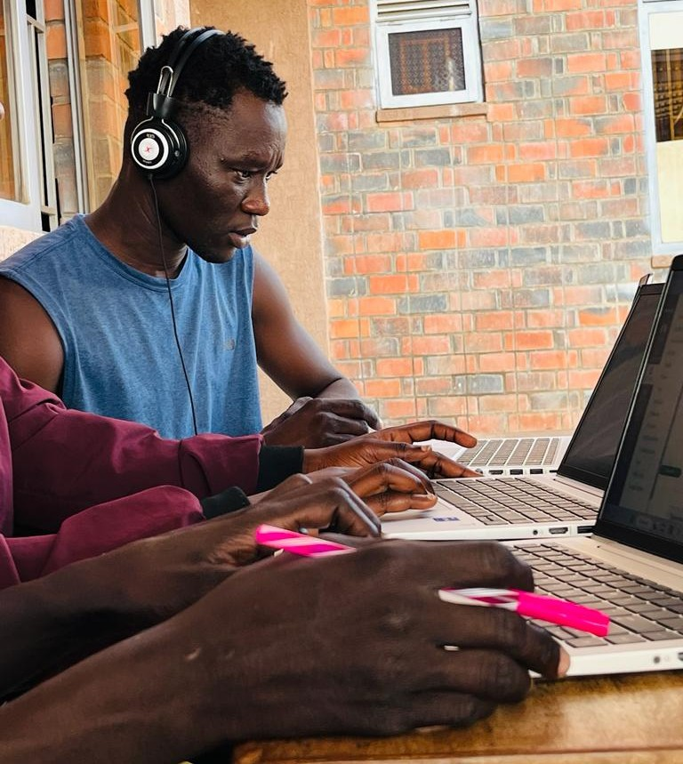

Before Editing

After Editing

| Edit | Effect on the Image |
|---|---|
| Removed Background |
- Focuses attention on the main image. - Removes distractions. |
| Increased Contrast | - Makes dark areas darker and bright areas brighter. |
| Increased Brightness | - Makes the image lighter and more vibrant. |
| Glow Shadow | - Adds a glowing outline, making the subject stand out. |
| Saturation Boost | - Enhances color intensity and makes the image more vivid. |
| Grayscale Filter | - Converts image to black & white for a dramatic or vintage look. |
| Rounded Edges | - Remove shape corners. |
| Saved as JPEG | - Image is compressed, no transparency, size is reduced, slight blur. |